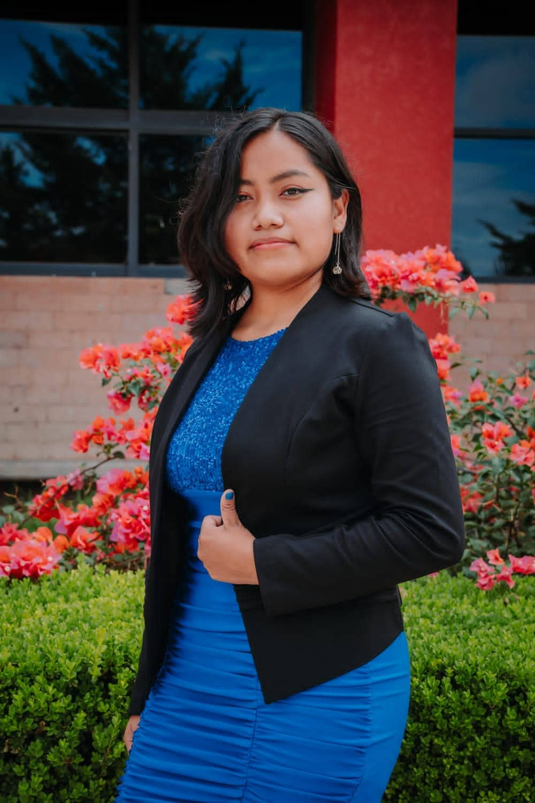
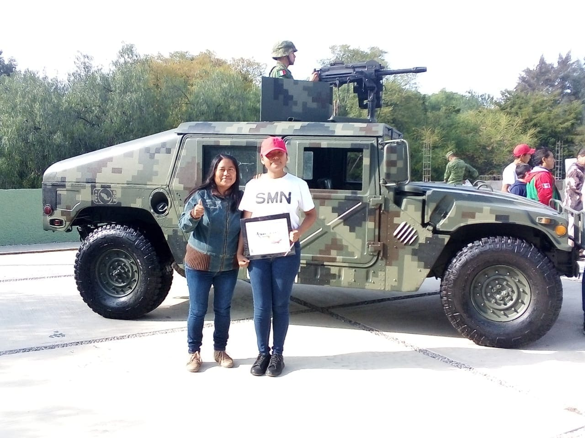
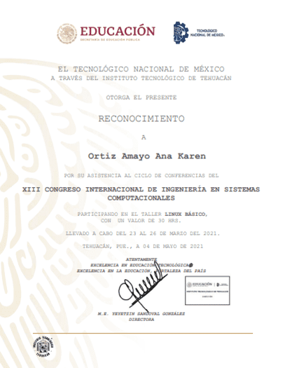
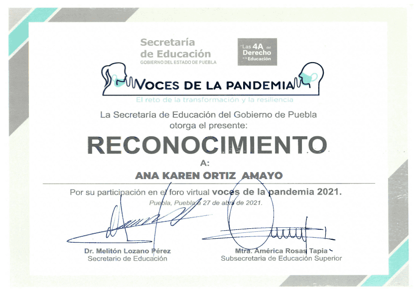

|  |
Ana Karen Ortiz Amayo |
|||
|---|---|---|---|---|
|
HABILIDADES |
EXPERIENCIA |
|||
|

Reconocimiento de servicio voluntario.

Reconocimiento de Linux básico.

Foro de voces. |
||||
|
FORMACIÓN |
INTERESES |
DATOS PERSONALES |
||